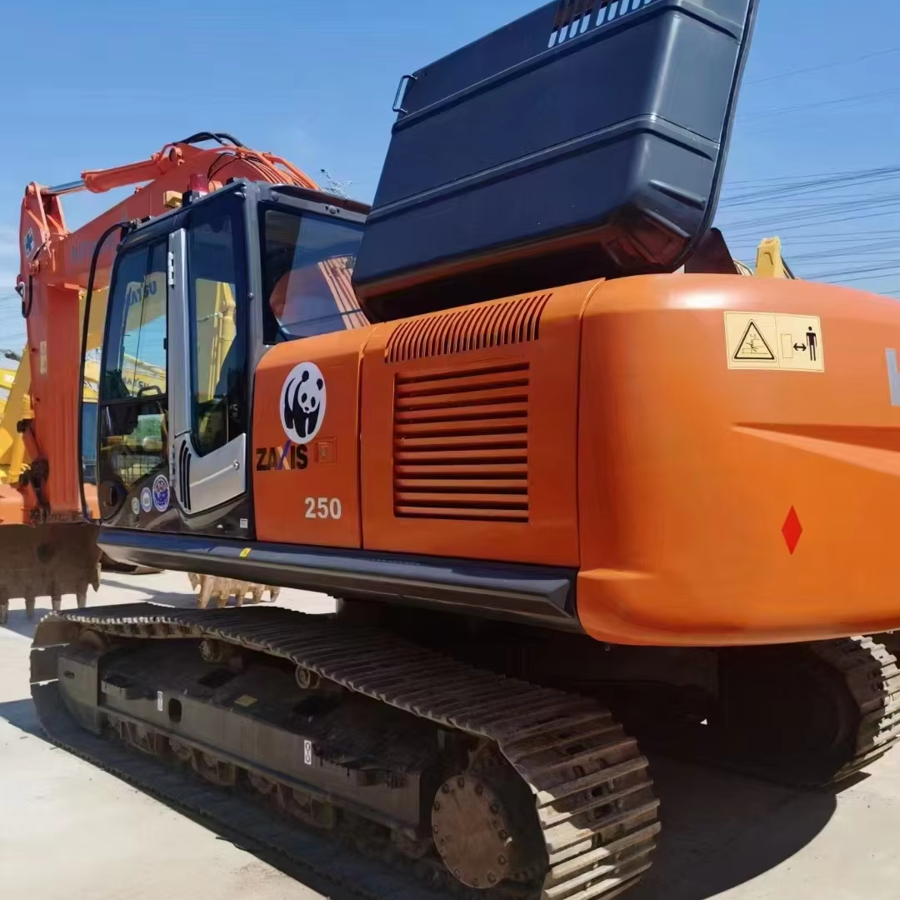

Refurbished Hitachi Zaxis 250 Excavator
The Hitachi Zaxis 250 Excavator is a high-performance machine built to handle a wide variety of construction, excavation, and material handling tasks. Known for its robust engine, advanced hydraulic systems, and exceptional fuel efficiency, the Zaxis 250 is ideal for demanding projects that require both strength and precision. Purchasing a refurbished Zaxis 250 allows businesses to benefit from all of its powerful features at a fraction of the cost of a new unit, making it an excellent investment for contractors and fleet managers looking to maximize their return on investment.
Honestly, it's almost impossible to buy a brand new excavator from China. They either don't exist or are made in China. If a Chinese seller tells you their Caterpillar/Komatsu/Volvo/Kobelco/Hitachi is brand new, they're lying. Therefore, a refurbished excavator is your best bet.

Here are the detailed specifications for a refurbished Hitachi Zaxis 250 excavator (ZX250LC-3 or ZX250LCH), tailored for your technical documentation and comparative spec work:
Operating Weight and Dimensions
- Operating Weight: ~25,000–25,500 kg
- Transport Length: ~10.3–10.5 meters
- Transport Width: ~3.19 meters
- Transport Height: ~3.2–3.4 meters
- Tail Swing Radius: ~3.5 meters
- Track Width: 600–800 mm standard
- Undercarriage: Long carriage (LC) or heavy-duty (LCH) variant
Engine and Powertrain
- Engine Model: Isuzu AH-4HK1X (Tier 2 or Tier 3 compliant)
- Rated Power Output: ~132–140 kW (177–188 hp) @ 2,000 rpm
- Fuel Tank Capacity: ~400–450 liters
- Travel Speed: ~5.5 km/h
- Swing Speed: ~11 rpm
- Drive Type: Hydrostatic with planetary final drives
Hydraulic System
- Main Pump Type: Dual axial piston pumps with HIOS III hydraulic system
- Flow Rate: ~2 × 270–300 L/min
- System Pressure: Up to 34.3 MPa
- Hydraulic Oil Capacity: ~300–350 liters
- Efficiency Features:
- Boom regenerative circuit
- Swing priority valve
- Auto hydraulic warm-up
- Fuel-saving ECO mode
Performance Metrics
- Bucket Capacity: 1.0–1.4 m³ (SAE heaped)
- Max Digging Depth: ~6.5–6.8 meters
- Max Reach (Horizontal): ~10.5–11.0 meters
- Max Dump Height: ~6.8–7.0 meters
- Bucket Digging Force: ~180–200 kN
- Arm Digging Force: ~130–150 kN
Cab and Operator Features
- Cab Type: ROPS/FOPS certified with reinforced structure
- Display: LCD monitor with diagnostics and fuel tracking
- Controls: Pilot-operated joysticks with auxiliary hydraulic circuit
- Comfort: Adjustable air-suspension seat, HVAC, low-noise cab
- Visibility: Wide glass area, rear-view camera, LED work lights
Attachments Compatibility
- Standard Bucket: 1.0–1.4 m³
- Optional Tools: Rock breaker, demolition shear, ripper, compactor
- Quick Coupler: Heavy-duty hydraulic coupler
Refurbishment Scope
Refurbished ZX250 units typically include:
- Engine Overhaul: Turbocharger, injectors, cooling system
- Hydraulic Restoration: Pump recalibration, valve block testing, hose replacement
- Electrical Diagnostics: Monitor, sensors, wiring harness
- Cab Reconditioning: Seat, joysticks, HVAC, repainting
- Structural Repairs: Boom/bucket welding, bushing replacement, undercarriage rebuild
Overview of the Hitachi Zaxis 250 Excavator
The Hitachi Zaxis 250 is a mid-sized tracked hydraulic excavator that is designed for a broad range of applications, including excavation, grading, lifting, and material handling. Its powerful engine, advanced hydraulics, and superior digging depth make it suitable for both light and heavy-duty tasks. The Zaxis 250 is built to provide excellent fuel efficiency, high productivity, and precision control, ensuring that operators can complete tasks quickly and efficiently.
When refurbished, the Zaxis 250 undergoes a meticulous reconditioning process that includes replacing worn parts with genuine Hitachi components. This process restores the machine to its original factory standards, ensuring that it operates like new while offering significant savings over a brand-new unit.
Key Specifications of the Hitachi Zaxis 250 Excavator
The Hitachi Zaxis 250 is designed for heavy-duty performance, offering a combination of power, reach, and efficiency. Here are the key specifications:
-
Operating Weight: Approximately 25,000 - 27,000 kg (55,115 - 59,524 lbs)
-
Engine Power: 173 hp (129 kW)
-
Max Digging Depth: Up to 6.3 meters (20.7 feet)
-
Maximum Reach: 9.5 meters (31.2 feet)
-
Bucket Capacity: Typically 1.2 - 1.4 cubic meters (42 - 49 cubic feet)
-
Fuel Tank Capacity: 400 - 500 liters (106 - 132 gallons)
-
Travel Speed: Up to 5.5 km/h (3.4 mph)
These specifications allow the Zaxis 250 to excel in a range of excavation and material handling tasks, from digging and trenching to lifting and grading. Its fuel-efficient engine ensures that you can work longer hours with less fuel consumption, reducing operating costs.
Performance and Efficiency of the Zaxis 250
The Hitachi Zaxis 250 is designed to deliver outstanding performance while maintaining low fuel consumption. Its powerful engine and efficient hydraulic system provide excellent productivity across a variety of heavy-duty tasks.
Performance Highlights:
-
Efficient Hydraulic System: The Zaxis 250 is equipped with an advanced hydraulic system that ensures smooth and precise control over the boom, arm, and bucket. This allows for faster cycle times and improved efficiency, making the machine ideal for both heavy lifting and precision excavation.
-
Fuel Efficiency: One of the standout features of the Zaxis 250 is its fuel-efficient engine. Designed to deliver high power with reduced fuel consumption, the Zaxis 250 helps businesses save on fuel costs while maintaining high productivity.
-
Digging and Lifting Power: With its powerful engine and robust hydraulics, the Zaxis 250 can handle tough digging and lifting tasks with ease. It is capable of digging deep trenches, lifting heavy loads, and performing other demanding applications with precision.
-
Precise Control: The Zaxis 250 provides excellent control for operators, allowing them to work in tight spaces or handle sensitive tasks with ease. The smooth and responsive controls make it easier to execute tasks with accuracy, improving overall job site efficiency.
Durability and Longevity of the Zaxis 250
The Hitachi Zaxis 250 is built with durability in mind, making it a reliable machine for long-term performance even in the toughest working conditions. With proper maintenance, this excavator can provide years of efficient operation.
Durability Features:
-
Reinforced Undercarriage: The Zaxis 250 features a durable undercarriage that is designed to handle rough terrain and heavy loads. The tracks, sprockets, and rollers are built to last, ensuring stable operation even in challenging conditions.
-
Long-Lasting Engine: Powered by a reliable engine, the Zaxis 250 is built to withstand high-stress conditions and provide thousands of hours of service with proper care and maintenance.
-
Hydraulic System Durability: The hydraulic components of the Zaxis 250 are designed to perform reliably under high pressure and intense use. The machine’s hydraulic system is engineered for longevity, ensuring minimal downtime and maximum productivity.
Comfort and Safety of the Zaxis 250
Operator comfort and safety are key priorities in the design of the Zaxis 250. The spacious cabin, reduced noise levels, and safety features ensure that operators can work in comfort while maintaining high levels of safety on the job site.
Comfort and Safety Features:
-
Spacious Cabin: The Zaxis 250 offers a spacious and ergonomic cabin with adjustable seating and user-friendly controls. The design of the cabin ensures that operators can work comfortably for extended periods, reducing fatigue and improving focus.
-
Noise and Vibration Reduction: The cabin is designed to reduce noise and vibration, creating a quieter and more comfortable environment for operators. This is especially beneficial during long shifts or in noisy environments.
-
Safety Features: The Zaxis 250 is equipped with safety features such as Roll Over Protection (ROPS) and Falling Object Protection (FOPS) to protect the operator in hazardous work conditions. The machine’s low center of gravity and stable design also enhance its safety when working on uneven terrain.
Versatility and Attachments for the Zaxis 250
The Hitachi Zaxis 250 is a highly versatile machine that can be fitted with a wide range of attachments to perform different tasks. Whether you need to dig, lift, grade, or demolish, the Zaxis 250 can be equipped with the right tools for the job.
Common Attachments for the Zaxis 250:
-
Buckets: The Zaxis 250 can be equipped with various bucket attachments, including general-purpose, heavy-duty, and grading buckets. These buckets typically range from 1.2 to 1.4 cubic meters (42 - 49 cubic feet), providing efficient material handling and excavation.
-
Hydraulic Breakers: For demolition work, the Zaxis 250 can be fitted with hydraulic breakers that allow the machine to break through concrete, rock, and other tough materials with ease.
-
Augers: Auger attachments are ideal for digging precise holes for foundations, posts, or other applications that require deep, narrow holes. The Zaxis 250 can be equipped with augers for these tasks.
-
Grapples: For material handling, the Zaxis 250 can be fitted with grapple attachments to lift and transport heavy materials, such as scrap metal, logs, and debris.
-
Quick Couplers: Quick couplers allow operators to easily switch between different attachments, reducing downtime and improving productivity.
Benefits of Purchasing a Refurbished Hitachi Zaxis 250 Excavator
Opting for a refurbished Zaxis 250 offers several advantages, particularly for businesses that want to save on equipment costs without compromising on quality.
Key Benefits:
-
Cost Savings: Refurbished Zaxis 250 excavators are significantly more affordable than new models. By choosing a refurbished unit, businesses can obtain a machine that performs like new but at a fraction of the cost.
-
Thorough Reconditioning: Refurbished Zaxis 250 excavators undergo a detailed inspection and reconditioning process, where worn-out components are replaced with genuine Hitachi parts. This ensures the machine is ready for heavy-duty work and provides years of reliable service.
-
Warranty: Many refurbished Zaxis 250 units come with a warranty, giving buyers peace of mind in case of unexpected mechanical issues. The warranty ensures that the machine will continue to perform well after purchase.
-
Sustainability: Purchasing refurbished equipment is an environmentally friendly choice, helping to reduce waste and extend the life of existing machinery. This contributes to sustainability in the heavy equipment industry.
Maintenance Tips for the Hitachi Zaxis 250 Excavator
To maximize the life and performance of the Zaxis 250, regular maintenance is essential. A proactive maintenance schedule can prevent costly repairs and keep the machine operating at peak efficiency.
Maintenance Recommendations:
-
Engine Maintenance: Regularly check the engine oil, replace air filters, and monitor coolant levels to prevent overheating and maintain optimal engine performance.
-
Hydraulic System: Inspect hydraulic hoses for leaks and replace hydraulic filters as necessary. A clean and well-maintained hydraulic system ensures smooth and reliable operation.
-
Undercarriage: Inspect the undercarriage regularly for wear, especially the tracks, sprockets, and rollers. Timely replacement of damaged components helps maintain the machine's stability and performance.
-
Attachments: Check attachments like buckets and grapples for wear and tear. Regularly replace or repair any damaged parts to ensure that the attachments work efficiently.
Conclusion
The Hitachi Zaxis 250 Excavator is a powerful and versatile machine that offers excellent performance, efficiency, and durability for a wide range of tasks. Purchasing a refurbished Zaxis 250 provides the same high-quality performance as a new unit but at a significantly reduced cost, making it a smart investment for businesses and contractors. With proper maintenance, the Zaxis 250 can continue to serve your operation for many years, ensuring long-term value and reliability.
Our Commitment
- 2 years / 4000 hours warranty.
- EPA certified.
- No sweatshop labor.
Contacts

- [email protected]
- Youtube Instagram Facebook
- Navigation: G206 (Sishu Bridge) in Changfeng County, Hefei City, Anhui Province, 200 meters north to the east